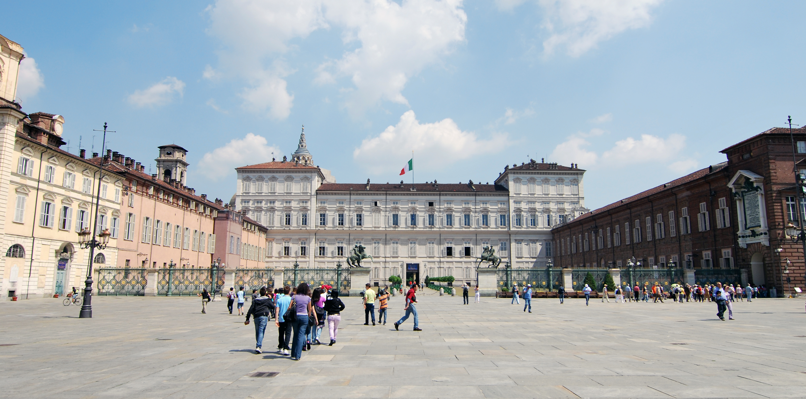
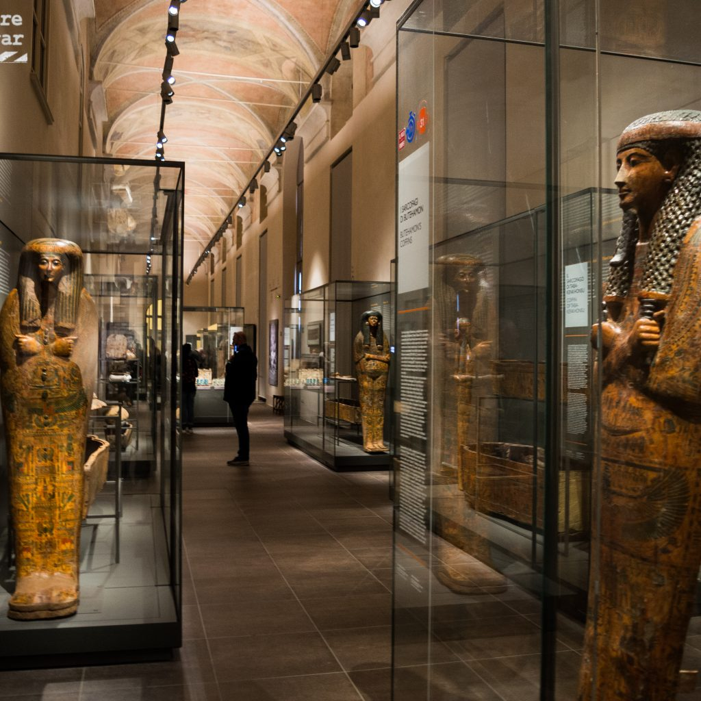
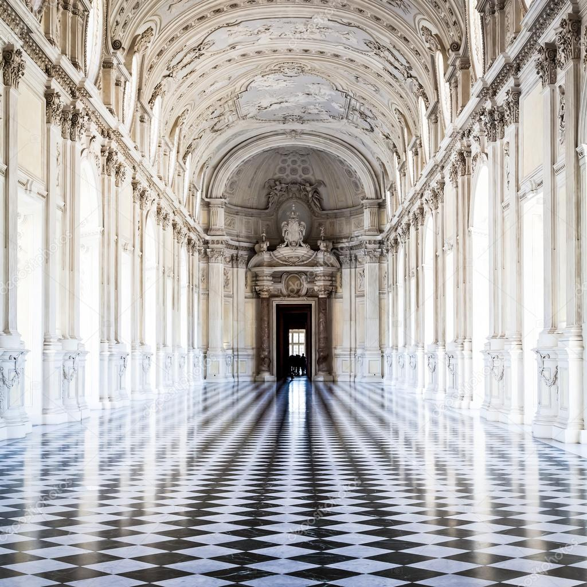

TURÍN
En Turín, la capital de Piamonte, al noroeste de Italia, los coches de carreras y el chocolate son motivo de orgullo. En esta ciudad se encuentra también el Museo Egizio, una de las más importantes colecciones del mundo de objetos del Antiguo Egipto. Un paseo por la Piazza Castello y Via Roma le llevará a algunos de los lugares más interesantes de la ciudad. En el parque de Valentino se encuentra un castillo del siglo XVIII, un jardín botánico y un pueblo medieval. Cuando se le abra el apetito, pruebe la comida sin pretensiones en alguna trattoria de la zona, donde le servirán pasta, vino de la tierra y café.

Dominique: Es muy acogedora. Tiene muchos monumentos y las plazas son muy grandes y bonitas. Hay muchos bares y restaurantes, por ejemplo a mí me gusta muchísimo Piazza San Carlo, que según yo es una de las plazas más bonitas de Turín.
La piazza Castello es la plaza principal de Turín, Italia, corazón del centro histórico de la ciudad: aquí están situados varios palacios de la ciudad, como el Palacio Real y el Palazzo Madama. En la Piazza Castello confluyen cuatro de las principales vías del centro: via Garibaldi (peatonal), via Po, via Roma y via Pietro Micca.
En la Piaza Statuto encontramos el monumento al Traforo del Frejus es una fuente monumental situada en la plaza Statuto de la ciudad de Turín. Dicho monumento está dedicado a la ejecución del carril del túnel de Frejus.
El Museo Egipcio de Turín está situado en la ciudad de Turín, Italia, en el palazzo dell'Accademia delle Scienze, un edificio de estilo barroco, proyectado por el arquitecto italiano Guarino Guarini, en 1678, para colegio de los nobles.
La Mole Antonelliana es un edificio monumental de Turín situado en el centro histórico, símbolo de la ciudad y uno de los símbolos de Italia.
El castillo de Venaria es una de las Residencias de la casa real de Saboya declaradas Patrimonio de la Humanidad por la Unesco en el año 1997.
